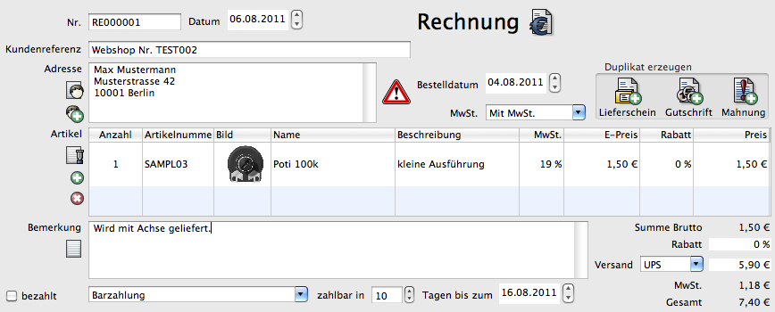

Der Dokumenteneditor ist für alle Arten von Dokumenten ähnlich. Je nach Art des Dokumentes (Brief, Rechnung ..) sind einige Elemente ausgeblendet.
Dokumentennummer. Diese wird automatisch hochgezählt. Sie kann nachträglich geändert werden. Es erscheint beim Abspeichern eine Warnung, wenn Sie nicht der nächsten freien Nummer entspricht.
Siehe Nummernkreise
Datum des Dokumentes. Bei einer Rechnung beispielsweise das Rechnungsdatum. Ein Ändern beeinflusst das Datum bei "zahlbar in X Tagen bis zum:"

Art dieses Dokumentes incl. Logo. Beispiel: Rechnung, Bestellung, Brief etc.
Referenznummer des Kunden. Bei einem Import aus dem Webshop wird hier die Webshop-Bestellnummer verwendet.
Adresse des Kunden. Bei einem Lieferschein ist dies die Lieferadresse, bei allen anderen Dokumenten die Rechnungsadresse.

Die Adresse kann direkt eingegeben werden. Ebenso kann über das Icon "Kontakt" eine Liste mit allen Kontaktadressen geöffnet und die gewünschte Adresse ausgewählt werden. Dann wird neben dem Adresstext auch eine Verknüpfung mit der Adresse hergestellt. Der Adresstext sollte dann nur noch geringfügig geändert werden.

Ist die Lieferadresse unterschiedlich zur Rechnungsadresse, so erscheint ein Warnsymbol. Die Lieferadresse wird beim Überfahren mit der Maus angezeigt.
Datum der Bestellung. Kann zum Beispiel auf die Rechnung gedruckt werden.
Nummer der Rechnung, die diesem Vorgang zugeordnet ist.
Die Mehrwertsteuer lässt sich für das komplette Dokument auf 0% setzen.
Erzeugt aus dem Dokument eines neues. Daten werden dabei soweit wie möglich übernommen.
Tabelle mit allen Artikeln dieses Dokumentes. Alle Spalten, bis auf den (Gesamt-)Preis lassen sich ändern. Ein neuer Artikel kann hinzugefügt werden:

Auswahl des Artikels aus der Liste mit allen Produkten.

Fügt eine neue Zeile mit einem Artikel ein.

Löscht den ausgewählten Artikel.
Feld für eine zusätzliche Bemerkung, die auf Rechnung oder Lieferschein gedruckt wird.
Öffnet eine Liste mit vordefinierten Texten.
Markierung, ob die Rechnung bezahlt wurde.
Auswahl der Zahlmethode. Je nach Zahlmethode wird auf der Rechnung der entsprechende Text gedruckt.
Anzahl der Tage, innerhalb derer die Rechnung bezahlt werden muss. Beim Ändern wird automatisch das Datum angepasst.
Datum, bis zu dem die Rechnung bezahlt werden muss. Beim Ändern wird automatisch die Anzahl der Tage angepasst.
Tag des Geldeingangs.
Tatsächlicher Geldeingang. Zieht ein Kunde einen Skontobetrag ab, wird dies hier berücksichtigt.
Summe aller Artikel
Rabatt auf alle Artikel
Die Versandkosten lassen sich aus einer Liste auswählen. Es ist auch möglich den Betrag nachträglich von Hand zu ändern. Versandkosten werden als Netto- oder Bruttowert angezeigt.
Anteil der Mehrwertsteuer
Gesamtsumme (Brutto) des Dokumentes incl. Mehrwertsteuer.